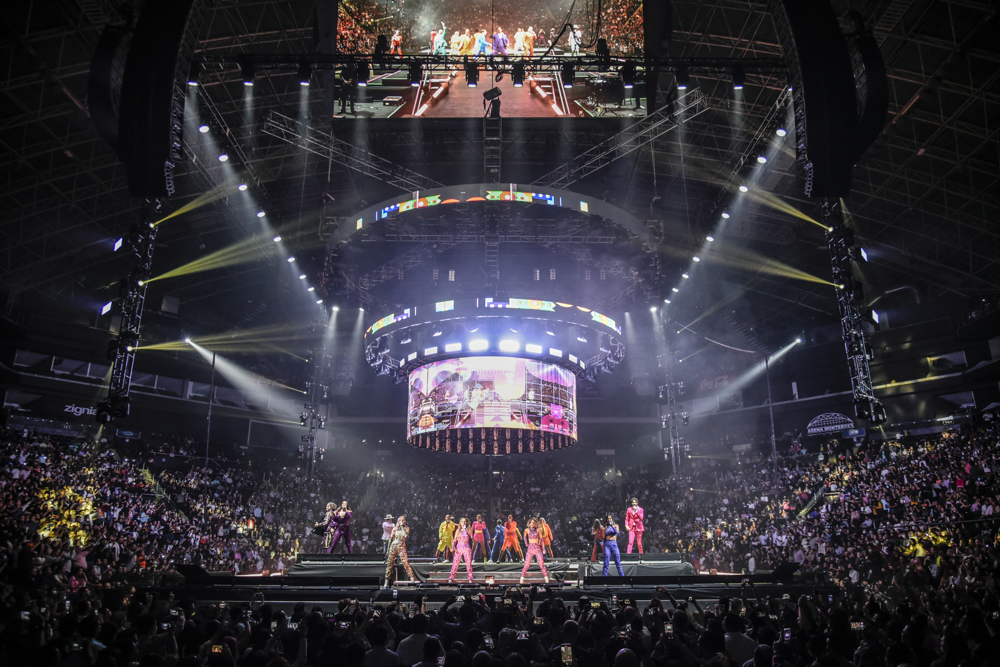
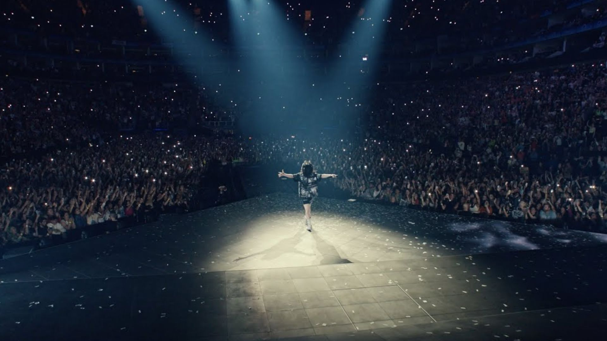
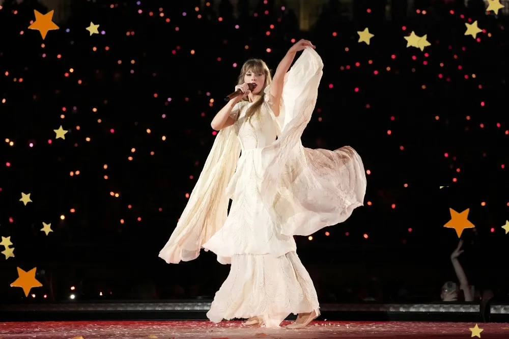

¿Qué es el Pop?
El pop es un género musical popular que se caracteriza por sus melodías pegajosas, ritmos bailables y letras fáciles de recordar. Ha evolucionado desde los años 50 hasta convertirse en uno de los estilos más influyentes a nivel mundial.

Estilos Populares del Pop
- Pop Electrónico – Con sintetizadores y beats modernos (ej. Dua Lipa)
- Teen Pop – Enfocado en jóvenes y adolescentes (ej. Britney Spears)
- Pop Latino – Fusión con ritmos latinos (ej. Shakira)
- Dance Pop – Ideal para pistas de baile (ej. Lady Gaga)
- Pop Alternativo – Más experimental y artístico (ej. Billie Eilish)

Íconos del Pop
- Michael Jackson
- Madonna
- Britney Spears
- Lady Gaga
- Taylor Swift

Recomendaciones para escuchar
- Blinding Lights – The Weeknd
- As It Was – Harry Styles
- Levitating – Dua Lipa
- Shallow – Lady Gaga & Bradley Cooper
- Shake It Off – Taylor Swift